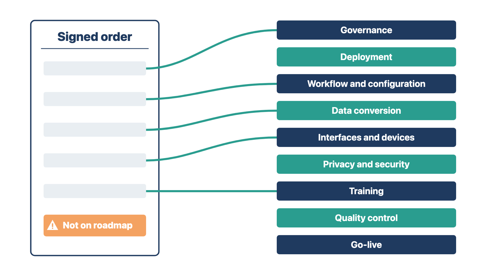
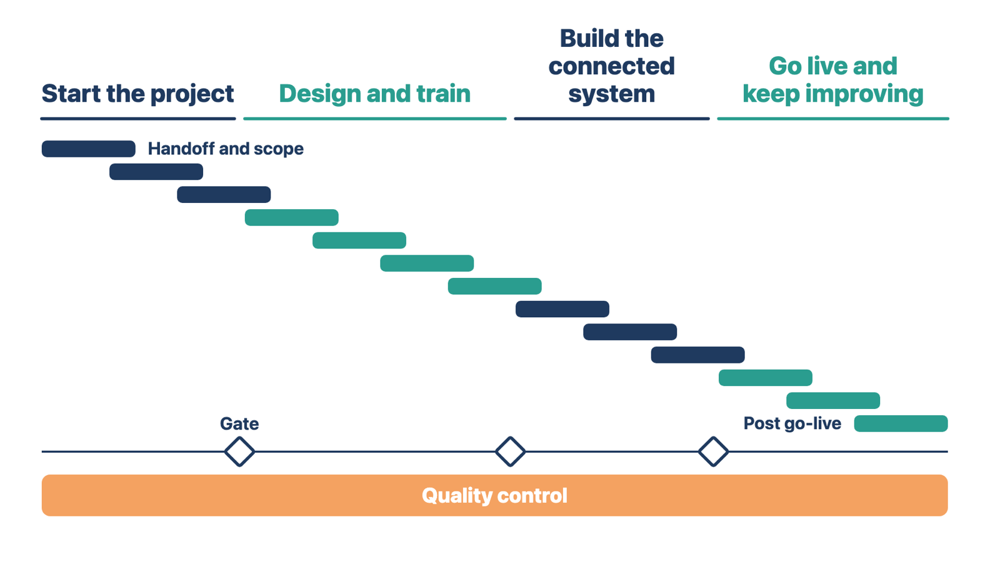
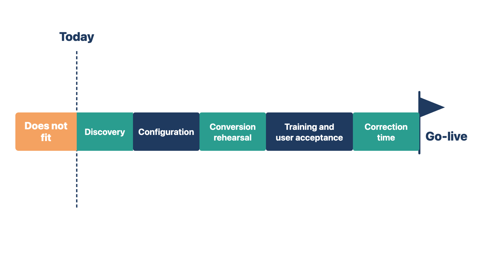

An item from the order that is missing from the plan usually gets forgotten. The clinic finds out at go-live, when the item is not there.
Module 1 recorded what was purchased, what is uncertain, and which resources the project probably needs. Planning turns that record into work that can be assigned, put in order, and checked.
Start with the major workstreams, the large groups of related work, rather than a long list of separate tasks:
Not every project needs every workstream at the same depth. But each purchased item must appear somewhere.

Example A. The order includes twenty signature pads. No workstream mentions them. You add them to "interfaces and devices" before someone forgets them.
Example B. The roadmap includes "redesign the referral process." No purchased item covers it. You check whether it is a needed implementation task, an internal cost, or a scope change.
Both checks run the same line in two directions: from the order to the plan, and from the plan back to the order.
Check yourself
"Configure intake" is too broad to manage. Nobody can tell who owns which part, or when it is done.
For each workstream, build a work breakdown. Name:
A useful breakdown for intake might include these tasks:
The breakdown should show ownership and order. It should not record every click.
Rule: Break work down until each piece has one owner, one approver, and evidence that it is done.
Example A. "Configure intake" becomes "build a test version of the new-patient form," owned by the configuration analyst and approved by the practice administrator.
Example B. "Training" becomes "front-desk staff show they can check in a patient," owned by the trainer and approved by the front-desk manager.
In both, a vague label becomes a piece of work someone owns and someone else can check.
Check yourself
Your roadmap and this course should use one map. If they differ, the team, the client, and the final exam will each ask which one is right.
The roadmap belongs in the shared management system. That is the project record where tasks, owners, dates, decisions, and evidence live. A slide may explain the plan. A spreadsheet may support detailed math. But the official dates, owners, status, and decisions point back to the shared record.
Create one phase for each of the 13 modules, grouped into the four stages shown in "The whole process at a glance." Each phase ends at its gate, a checkpoint that must pass before the work moves on.
| Stage | Phases (modules) |
|---|---|
| 1. Start the project | 1 Handoff and scope · 2 Planning · 3 Kickoff |
| 2. Design and train | 4 Workflow discovery · 5 General training · 6 Specialized training · 7 Quality control |
| 3. Build the connected system | 8 Data conversion · 9 Integrations and configuration · 10 Automation and AI |
| 4. Go live and keep improving | 11 Go-live readiness · 12 Go-live and stabilization · 13 Post go-live |
The phases are a sequence, not 13 separate boxes. Several overlap. Data-conversion discovery may start before training. An interface contract may need attention during planning. Quality control runs through the whole build. Show those overlaps, but keep the gates that control movement.

Example A. The source vendor can send a test export early. You start data-conversion work during Stage 2. The Stage 3 gate still requires the conversion to pass before production.
Example B. The clinic asks to start training before discovery is approved. The training phase can start early sessions. But the general-training gate still requires approved workflows.
In both, work can start early. The gate still decides when it is finished.
Check yourself
A date alone tells the sponsor that time passed. A result tells the sponsor that the project moved.
A milestone is a meaningful event or approved result, not only a date. Useful milestones include:
Rule: Write each milestone as a result someone approved, not only as a date.
Example A. "Training starts" is an event. "All required roles showed they can do the approved workflows and exceptions" is a readiness result.
Example B. "Interface work begins" is an event. "Lab orders and results pass end-to-end testing" is a result.
Use both dates and outcomes where the difference matters.
Check yourself
A date becomes credible only when the work fits before it. Finding a gap now gives the sponsor choices. Finding it in the last month leaves none.
First, agree the rollout approach: whether the clinic goes live all at once, by location, or by provider group. The choice changes the training, support, and conversion plans. Record the choice and who made it. The sponsor decides; you show how each choice changes the plan.
If the project has a target go-live date, plan backward from it:

Rule: If the work does not fit before the date, show the sponsor the gap now, with options.
Example A. Configuration ends December 15. Testing, training, and correction need 10 weeks. Go-live is February 1, about 7 weeks later. You show the sponsor the 3-week gap and the options.
Example B. A two-location clinic chooses to go live one location at a time. The second location's training moves 4 weeks later. You update the plan and show the sponsor the new dates.
In both, the plan shows what the date really requires, and the sponsor decides with the facts in hand.
Check yourself
Different dates move in different ways. A label tells everyone which dates can move through normal planning and which need a formal change.
Record the reason for every important date:
The label changes the conversation. A contractual date may need escalation or a formal change. A target date can move through normal planning. An external date may need a backup plan.
Rule: Label each important date by its basis, so everyone knows how it can move.
Example A. The order calls January 12 the client's "requested target." It is a target, not a contractual date.
Example B. The Lakeshore lease starts November 20. That date is operational. Moving it is not the project's decision.
Both dates appear on the roadmap. Their labels tell the team which one planning can move.
Check yourself